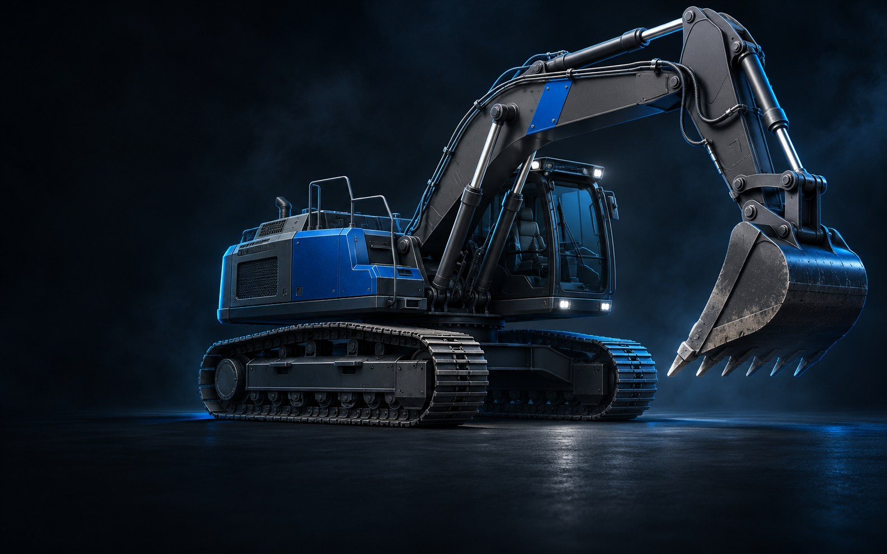

Turning equipment enquiries into a customer-led video strategy

The challenge
An advertiser selling large lifting and excavation machines had refined its targeting and was receiving many product questions, while sales remained flat. The task was to understand buyers’ concerns and turn product interest into a clearer reason to buy.
My role
I originated the research and creative concept, directed the advertiser’s teams in gathering customer insights, and guided the filming teams and video preparation. I used my filmmaking background to translate the research into product stories, with dedicated teams handling filming.
Research that shaped the creative
I directed the teams to consolidate frequently asked questions, survey companies in the market, and speak with drivers and equipment users. We identified five recurring problems and matched them with ways the advertiser’s machines could address them.
The video strategy
The campaign centred on one message, “We solve your problems.” The videos combined equipment footage with UGC-style driver interviews, using clear stories to show how the machines addressed buyers’ concerns.
I guided the creative approach and video preparation so that each story connected a customer problem with a relevant product capability.
Result
The client reported 30% sales growth in the year following the campaign.